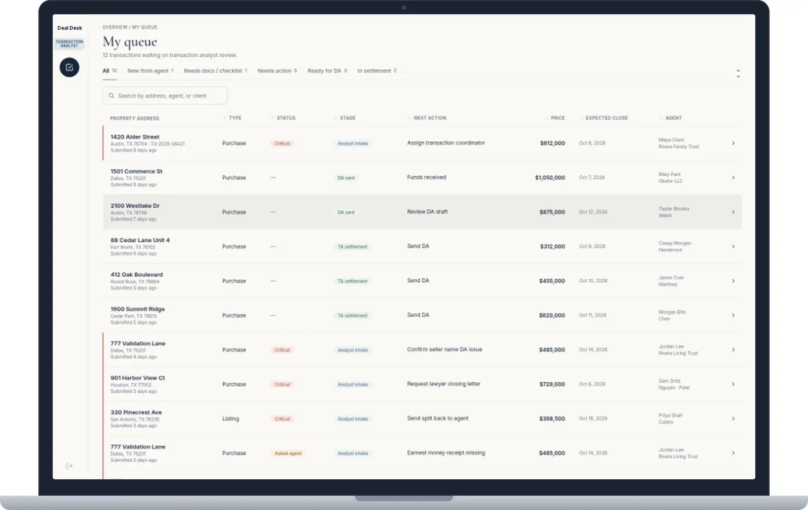
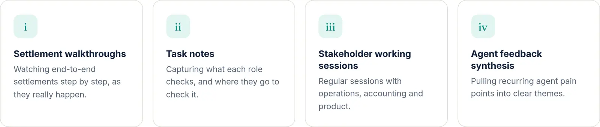
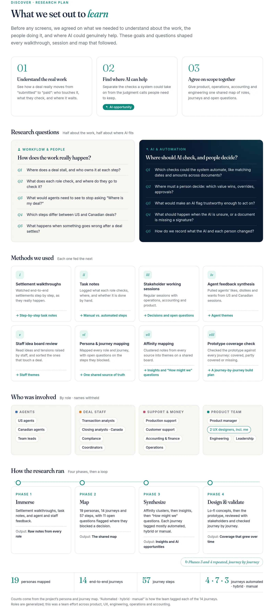
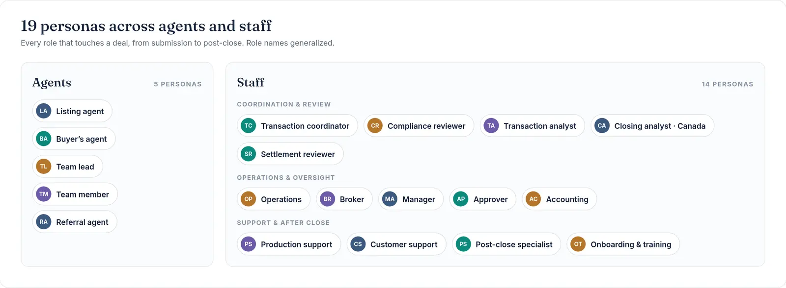
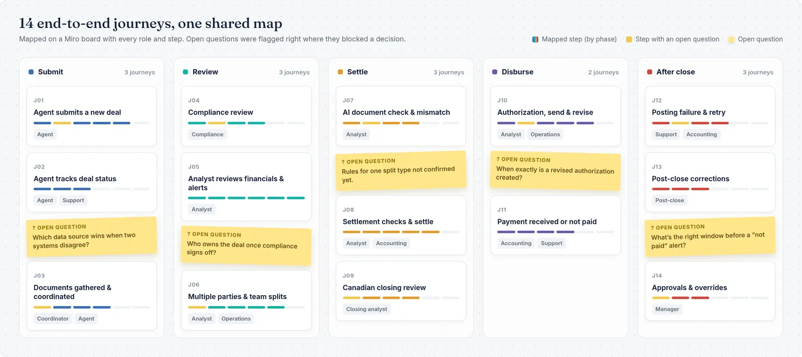
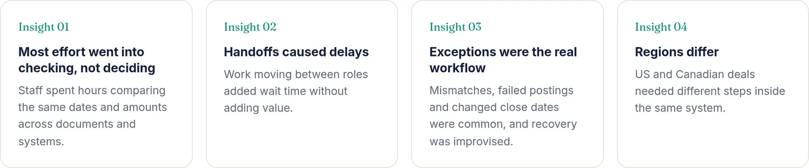
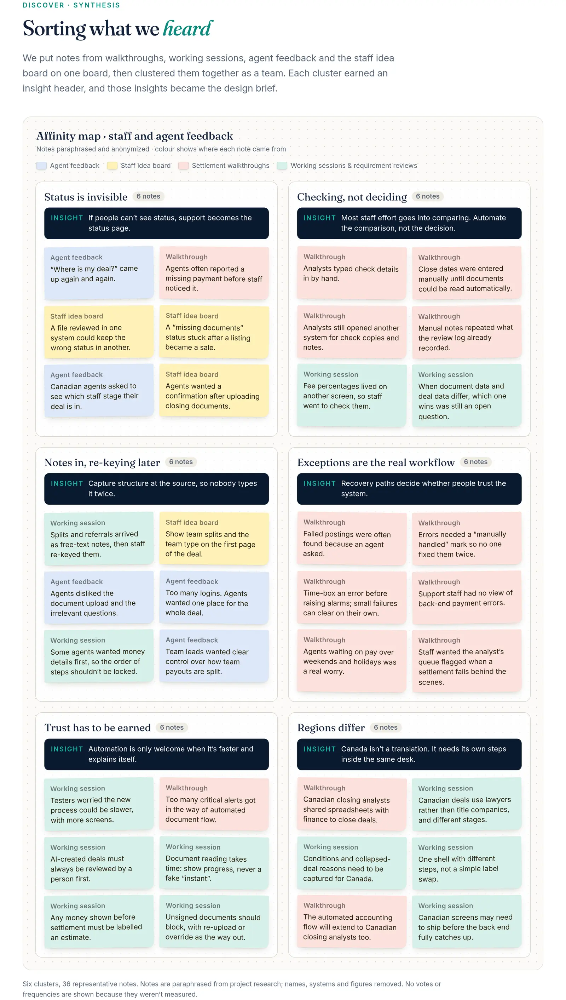
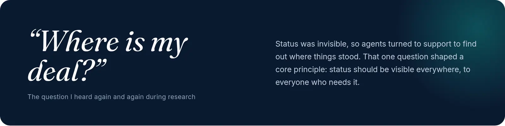

eXp Realty · Deal Desk · 2025–2026
One deal, one platform, one desk
An AI-native transaction desk that takes a deal from “submitted” to “paid” for agents and every staff role in between, across US and Canadian rules.

One deal, one desk
Too many tools, the checks, and a shared desk.
The challenge
Too many tools, invisible status, heavy checking.
Getting one deal from “submitted” to “paid” meant agents and staff hopping between disconnected tools, each holding only part of the story. The platform had to serve agents and many staff roles, cut the manual checking, and make every deal’s status visible to anyone who needed it, under both US and Canadian rules.
The contrast in the case study is about 11 tool types against one desk for agents and staff. “Now” is designed and prototyped, not a measured result. Details and visuals are anonymized.
Discover & explore
Watch the work before drawing a screen.
Before any screens, the question was how a deal actually moved: who touched it, what they checked, and where it stuck. That meant end-to-end settlement walkthroughs, task notes on what each role checks, and working sessions with operations, accounting and product, plus agent feedback.


Who touches a deal
19 personas, agents and staff.
Nineteen personas cover the roles that touch a deal, grouped from coordination and compliance through support and post-close. The set became shared language for scope with product and operations. Role names on the map are generalized.

How a deal moves
14 journeys, one shared map.
Journey mapping in Miro covered fourteen end-to-end journeys. Open questions were flagged on the steps where rules, ownership or data sources were not settled yet. Those questions mattered as much as the answers. The map became the shared source of truth for what to build next.

What we heard
Five insights, then five principles.
Notes from walkthroughs, working sessions, agent feedback and a staff idea board were clustered together. The synthesis names five insights: checking over deciding, handoff waits, exceptions, regions. Happy-path work was separated from the exception paths that dominate.
With product and operations, that became five principles: one desk, validate, guide, status, and system. The rule for every AI and validation gate: the system checks, people decide.


The question that kept coming up
“Where is my deal?”
Status was invisible, so agents turned to support to find out where things stood. That question became a principle: status should be visible everywhere, to everyone who needs it. The old payment-question chain ran agent, then support, then analyst, then accounting.

Design
One desk, with an exception lane from the start.
The information architecture runs from submit through disbursement. Validation gates and AI assist sit beside an exception lane. The analyst prototype was extended journey by journey, under one design system. Legacy accounting and document-integration constraints stayed visible. US and Canada are different steps inside one shell, not a label swap. Open data-source conflicts were left visible instead of designed around quietly.
The same deal was redrawn around role queues, shared status and human checkpoints. AI document automation lives inside the desk, not as another tool. Exception paths — missing fields, failed posting, not paid — sit next to the happy path.
Queues, alerts, money
Oldest first, so an aging deal cannot hide.
- Queues Role-based queues for coordination, compliance, analysis and operations, sorted oldest first. A status timeline runs from submission through settlement to disbursement.
- Alerts Critical alerts explain the problem and jump to the fix. Analysts edit financials inline, on the deal, instead of hunting across screens.
- Commission Breakdown by agent, including splits and fees, with multiple parties and team splits. One unsettled split type waited until operations confirmed the rules.
- AI review In-desk review extracts dates and amounts and compares them to the deal. A mismatch is document versus deal, side by side, and the analyst picks the value instead of retyping it.
- Settlement gates Payments must balance and close dates must match before settle. Send and settle unlock only after checks pass. Authorization keeps version history, and a changed close date creates an auto-revised version.
- After close Posting failure shows what was sent and the logs, then retry or escalate. Unpaid deals raise a not-paid alert after a set window. Corrections use reason codes and a full history.
The AI pipeline is read, extract, check, flag, then human review. Settle unlocks after checks. An unsigned path offers re-upload or override. Upload, full extraction, and splitting a combined file were left as planned next steps.
The agent side
The same timeline staff already use.
The agent home and deal page sit on the same design system. Submitting to the desk is one step, with attention and documents in one place. Agents see the same status timeline, which is the answer to “Where is my deal?”
A proposed change merges coordinator steps into the analyst role to remove a handoff wait. The busier screen is handled with guided alerts and progressive disclosure. That trade-off was reviewed with stakeholders against the old three-hand path.
Test
Walk the flows with the people who run them.
Operations, accounting and product walked each flow, and open questions were captured. Journeys were tested against real end-to-end tasks, from a submitted deal to paid. Flows were refined as rules landed, and coverage grew journey by journey.
What's next
Intended outcomes, not a score.
The case study frames intended outcomes only: fewer screens, one desk, less checking, clearer status. Learnings carried forward: exceptions first, visible unknowns, and defer when unsure. The work builds on a teammate’s prototype and keeps humans in the AI loop.
Upload
Still a planned next step, with full extraction.
Combined files
Splitting a combined file was deferred.
One split type
Held until operations confirmed the rules, to avoid rework.
Next project
Next project
Agent TransactionseXp Realty web application for agents who handle transactions.